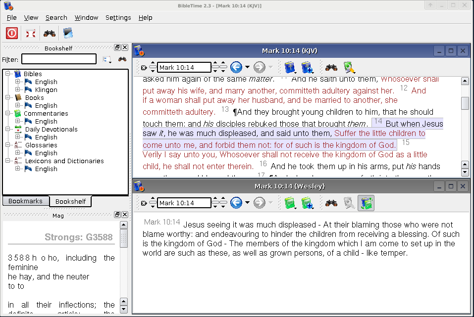

This is how a typical BibleTime session looks like:

You can easily see the different parts of the application. The Bookshelf on the left side is used to open works and to manage your bookmarks. The little "Mag" window below the Bookshelf is used to display extra information that is embedded in documents. When you move your mouse over a footnote marker, for example, then the Mag will display the actual content of the footnote. The toolbar gives you quick access to important functions, and the Desk on the right side is where you do your real work.
Let us now proceed by looking at the different parts of the application individually.


Would you like to make a comment or contribute an update to this page?
Send feedback to the KDE Docs Team